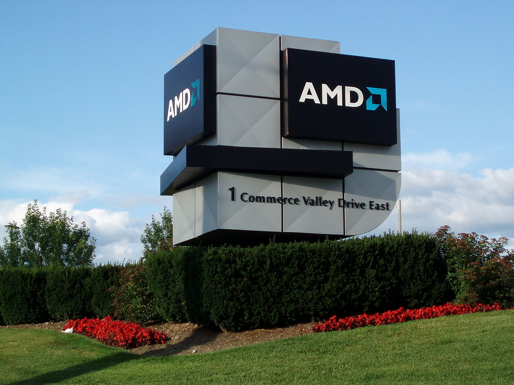
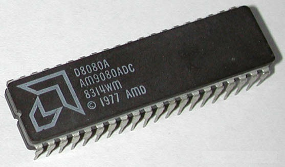
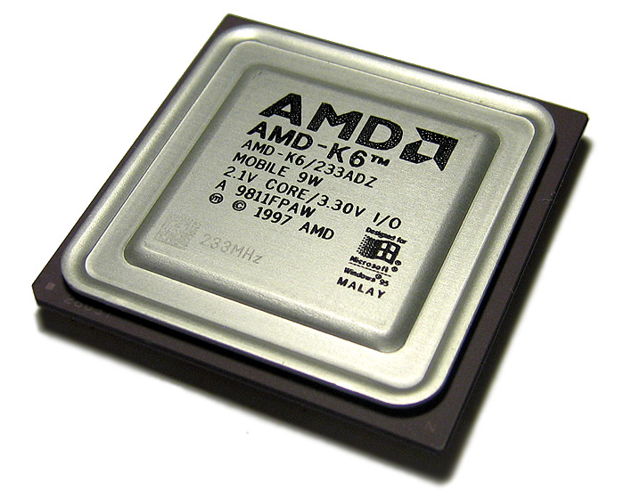

Inicio

AMD fue fundada el 1 de mayo de 1969 por un grupo de ejecutivos de Fairchild Semiconductor,
entre ellos se encontraban Jerry Sanders III, Edwin Turney, John Carey, Steven Simonsen, Jack
Gifford, Frank Botte, Jim Giles y Larry Stenger. AMD se estrenó en el mercado de los circuitos
integrados lógicos, para dar el salto a las memorias RAM en 1975. AMD siempre ha destacado por
ser el eterno rival de Intel, actualmente son las dos únicas compañías que venden procesadores
x86, aunque VIA está empezando a meter la patita de nuevo en esta arquitectura.
AMD 9080

Su primer procesador fue el AMD 9080, una copia del Intel 8080 que fue creada mediante técnicas
de ingeniería inversa. Tas él llegaron otros modelos como los Am2901, Am29116, Am293xx usados en
varios diseños de microcomputadores. El siguiente salto lo representaron los AMD 29k, que buscaban
destacar por la inclusión de unidades gráficas, de video y memorias EPROM, y los AMD7910 y AMD7911,
que fueron los primeros en soportar varios estándares tanto Bell como CCITT en 1200 baudios half
duplex o 300/300 full dúplex. Tras ello, AMD decide centrarse únicamente en los microprocesadores
compatibles con Intel, lo que convierte a la compañía en competencia directa.
AMD firma un contrato con Intel en 1982 para licenciar la fabricación de procesadores x86, una
arquitectura que es propiedad de Intel, por lo que necesita del permiso de esta para poder fabricarlos.
Esto le permitió a AMD ofrecer procesadores muy competentes y hacer competencia directa a Intel, quién
canceló el contrato en 1986, negándose a revelar detalles técnicos del i386. AMD apeló contra Intel y ganó
la batalla legal, con la Suprema Corte de California forzando a Intel a pagar más de 1000 millones de dólares
en compensación por violación de contrato. Las disputas legales siguieron y AMD se vió forzada a desarrollar
versiones limpias del código de Intel, lo que significaba que ya no podía seguir clonando los procesadores
de Intel, al menos de forma directa.
Tras esto, AMD tuvo que poner a trabajar dos equipos independientes, uno destripando los secretos de los chips
de AMD, y el otro creando sus propias equivalencias. Am386 fue el primer procesador de esta nueva era de AMD,
un modelo que llegaba para luchar contra el Intel 80386, y que logró vender más de un millón de unidades en
menos de un año. Tras él llegaron el 386DX-40 y el Am486 que fue utilizado en numerosos equipos OEM probando
su popularidad. AMD se dio cuenta de que debía dejar de seguir los pasos de Intel o siempre estaría a su sombra,
además de que cada vez era más complicado por la gran complejidad de los nuevos modelos.
AMD K5 y K6

AMD K5 fue el primer procesador creado por la compañía desde sus cimientos y sin nada de código
de Intel en su interior. Tras este llegó el AMD K6 y el AMD K7, el primero de la marca Athlon que
llegó al mercado el 23 de junio de 1999. Este AMD K7 necesitaba de nuevas placas base, pues hasta
el momento era posible montar procesadores tanto de Intel como de AMD en la misma placa base.
Con ello nace el Socket A, el primero exclusivo para procesadores de AMD. El 9 de octubre de 2001
llegó el Athlon XP y el Athlon XP el 10 de febrero de 2003.
AMD siguió innovando con su procesador K8, una gran revisión de la anterior arquitectura K7 que
añade las extensiones de 64 bit al conjunto de instrucciones x86. Esto supone un intento por parte
de AMD de definir el estándar x64 e imponerse a los estándares marcados por Intel. En otras palabras,
AMD es la madre de la extensión x64, la cual usan todos los procesadores x86 de la actualidad. AMD
consiguió dar un giro a la historia y Microsoft adoptó el conjunto de instrucciones de AMD, dejando
a Intel el trabajo de ingeniería inversa de las especificaciones de AMD. AMD lograba por primera vez
colocarse por delante de Intel.
AMD se marcó otro tanto ante Intel con la introducción del Athlon 64 X2 en 2005, el primer procesador
de doble núcleo para PC. La principal ventaja de este procesador es que contiene dos núcleos basados en
K8, y puede procesar varias tareas a la vez rindiendo mucho mejor que los procesadores de un solo núcleo.
Este procesador sentó las bases para la creación de los procesadores actuales, con hasta 32 núcleos en su interior.
AMD Turion 64 es una versión de bajo consumo destinada a los ordenadores portátiles, para competir contra
la tecnología Centrino de Intel. Por desgracia para AMD, su liderazgo acabó en 2006 con la llegada de los
Intel Core 2 Duo.